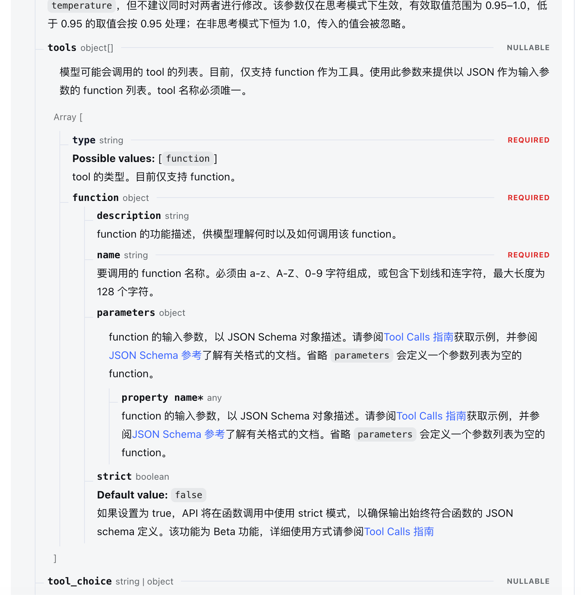

Agent、Harness是什么？有什么区别？
当前的 Agent 的含义更多的是能自主根据上下文进行决策，调用工具解决问题的 AI Agent。
Harness 则是以大模型作为驱动，围绕着大模型搭建的一套包括模型调用规则、工具的提供、上下文管理等系统。
Agent = Harness + 大模型。
二者很多时候可以通用，其区别跟“家”和“屋”的区别类似。家 = 屋 + 人。
例子：Codex、Claude Code更多的被称为 Agent，这里强调 Harness 和模型是一个整体。Deepseek Harness 可以方便更换不同模型，所以侧重于叫 Harness。但本质上差不多，比如一套房子可以叫“快乐之屋”，也可以叫“快乐之家”。
API
API 是 Application Programming Interface。简单理解就是某个软件/平台对外提供的服务结构。
例子一：Deepseek要对外提供模型服务，所以将这些服务暴露出来，以一套标准的格式面向用户。用户通过这标准的格式，可以获取其服务。
例子二：一位石油领域专家要对外提供安全咨询的服务，在淘宝平台挂上链接，通过下单该链接可以获取相关咨询。这个链接就是该专家提供的API。
例子三：Win 操作系统底层需要向上层应用提供不同服务，比如文件的读写、进程的创建与销毁。这些也需要通过函数调用的形式提供给程序，这些函数就是操作系统的 API。
通俗且简单地说，API 就是某个主体对外提供的，能通往自己某项服务的入口。
API 能够选择性地提供服务，相对安全，同时对不同用户是一套标准，提高提供和获取服务的效率。
【这里介绍 DeepSeek 的 API 调用方式（通过以 HTTP 为基础的 Requests 库调用）。】
（DeepSeek 的 API 调用是通过 HTTP 请求来实现的。并且请求的内容和返回的内容都是正文部分，虽然是通过 HTTP 实现的，但是 HTTP 是透明的。）
（Python 中的 Requests 库可以实现 HTTP 请求。DeepSeek 中的 API 文档规定的是其中的内容，也就是请求体的格式和返回的正文的格式。）
【请求部分】
部分 作用 例子 URL 请求发给哪个地址、哪个接口 https://example.com/api/chatMethod：请求方法 表达要进行哪类操作 GET、POSTHeaders：请求头 附带格式、身份等信息 API Key、内容类型 Body：请求体 要交给服务器处理的数据 聊天消息、工具说明
2
3
4
5
6
7
8
9
10
11
12
13
14
15
16
17
18
19
20
21
22
23
24
25
26
27
28
29
30
31
32
33
34
35
36
37
38
39
40
41
42
43
44
import json
url = "https://api.deepseek.com/chat/completions"
payload = json.dumps({ # 字典转换成 JSON 字符串
"messages": [
{
"content": "You are a helpful assistant",
"role": "system"
},
{
"content": "Hi",
"role": "user"
}
],
"model": "deepseek-flash",
"thinking": {
"type": "enabled"
},
"reasoning_effort": "none",
"max_tokens": 4096,
"response_format": {
"type": "text"
},
"stop": None,
"stream": False,
"stream_options": None,
"temperature": 1,
"top_p": 1,
"tools": None,
"tool_choice": "none",
"logprobs": False,
"top_logprobs": None
})
headers = { # 请求头
'Content-Type': 'application/json',
'Accept': 'application/json', # 意思是希望收到 JSON 格式的响应
'Authorization': 'Bearer <TOKEN>'
}
response = requests.request("POST", url, headers=headers, data=payload)
print(response.text)
JSON 文本和 Python 中的字典对象形式一样，但是是有区别的，需要进行转换【返回部分】
返回的形式如下所示，可以分别通过 request 返回的对象取出。
2
3
4
5
Content-Type: application/json
Content-Length: 19
{"message":"Hello"}
2
3
4
5
6
7
8
9
10
11
# 200，HTTP 状态码
response.headers["Content-Type"]
# "application/json"，响应头中的一个字段
response.text
# '{"message":"Hello"}'，正文，类型是字符串
response.json()
# {"message": "Hello"}，把 JSON 正文解析成 Python 字典得到正文后，正文的格式就如 DeepSeek 文档中所示。
SDK
SDK 全称是 Software Development Kit，软件开发工具包。
某些代码实现复杂且常用，这时候可以把这些包装成一个包，提供对应的接口，拿来即用。SDK 正是为此而诞生的。
SDK 在代码库之外，有些的还包括开发工具。
例子：OpenAI Python SDK，提供针对于 Open AI 平台的模型介入工具包，即对相关 API 作了封装。DeepSeek 对该 SDK 作了兼容；JDK，包括 Java 库、运行时环境、开发文档等开发工具，为 Java 开发服务；此外还有 AWS SDK for Python：Boto3，为使用 AWS 服务；Android SDK，为开发安卓应用服务。
【这里介绍 API 是如何封装到 SDK 中的】
DeepSeek模型通过 OpenAI SDK调用
2
3
4
5
6
7
8
9
10
11
12
13
14
15
16
17
18
19
from openai import OpenAI
client = OpenAI(
api_key=api_key,
base_url="https://api.deepseek.com",
timeout=60,
max_retries=0,
)
response = client.chat.completions.create(
model="deepseek-flash",
messages=messages,
tools=TOOLS,
max_tokens=4096,
extra_body={"thinking": {"type": "disabled"}},
)
message = response.choices[0].message这里把请求体，即 payload 中很多参数都包装起来了，以及 requests 请求连接过程、JSON 格式处理、请求失败处理、模型回应等
MCP
Model Context Protocol，模型上下文协议。
模型需要接入工具来实现各种操作，比如读写文件。在 DeepSeek 的 API 调用格式中有个参数 tools，需要将工具都以该形式（提供描述、名称、参数等）呈现给模型，模型才知道如何去使用。

但是最初在实现上会困难，因为 Agent 需要一个个去适配。比如读取文件要添加一个 read_file，写文件也要添加对应的函数，而且这些函数需要额外实现。这是在工具端的麻烦——某个平台内有不同的工具，要一个个去实现。
这时候工具端如果能提供一个服务，将所有的可提供的服务都按照一个标准（JSON-RPC 2.0 消息格式）实现好（Agent 再将这种格式适配成模型 API 接受的格式），并且对外提供一个通向这些不同工具的接口就好了。这就是 MCP Server 做的事情。这样的话 Agent 就也得按照统一的 MCP 格式来和工具端交流了，这就是 Agent Client 做的事情（MCP 协议通过 JSON 交流）。
举个例子：某家银行可以取现金、存现金、买国债，有对公服务、贷款服务、开卡服务等，对应的业务有对应的业务员处理。假如一个人要什么服务都得去和相应的业务员联系的话会很麻烦，得找对应业务员的联系方式，业务处理过程也要了解。如果这些业务都能整合在一起就好了，不如就叫做“资源整合部”。这样的话我们要办什么业务直接去找资源整合部就好了。同时其他的什么电子、互联网、石油、零售类的各种各样的公司如果都有同样的处理方式的资源整合部，那么对于所有的用户来说不管做什么只需要联系对应公司的资源整合部就行了，我们只需要熟悉资源整合部的处理方式。这里“资源整合部”就是 MCP Server。用户通过资源整合部的处理方式去交流，比如通过助手来提交对应的表格，并接受回执，那么助手就是 MCP Client，表格就是通信的格式。
通过 MCP 调用工具的流程是这样的：
获取工具列表流程：Agent的 MCP Client —— MCP Server，获取工具列表，转换成 API 的 tools 参数
调用工具流程：模型需要调用某个工具，MCP Client —— MCP Server，Client 接收 Server 的返回数据
Skills
Skills 主要以 md 文档的形式保存。
在用模型解决问题的过程中有些流程是通用的，在以后解决类似的问题的时候可以复用，这时候就可以把这套流程以 md 文档的形式记录下来，叫做 Skills。比如概念解释、论文写作等都可以整理成 Skills。